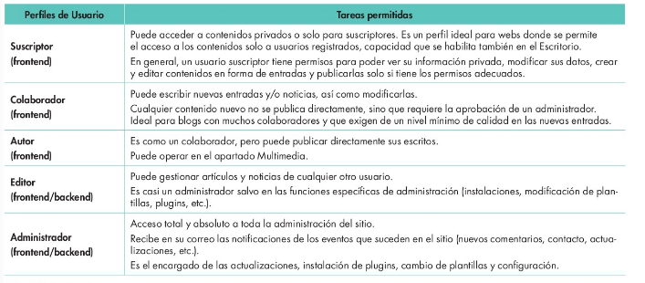

Instala gestores de contenidos, identificando sus aplicaciones y configurándolos según requerimientos.
Criterios de evaluación:
a) Se han identificado los requerimientos necesarios para instalar gestores de contenidos.
b) Se han gestionado usuarios con roles diferentes.
c) Se ha personalizado la interfaz del gestor de contenidos.
d) Se han realizado pruebas de funcionamiento.
e) Se han realizado tareas de actualización del gestor de contenidos, especialmente las de seguridad.
f) Se han instalado y configurado los módulos y menús necesarios.
g) Se han activado y configurado los mecanismos de seguridad proporcionados por el propio gestor de contenidos.
h) Se han habilitado foros y establecido reglas de acceso.
i) Se han realizado pruebas de funcionamiento.
j) Se han realizado copias de seguridad de los contenidos del gestor.
Gestores de contenidos:
Un gestor de contenidos (CMS – Content Management System) es una aplicación informática que permite la creación, edición y publicación de contenidos en la web. Los gestores de contenidos permiten a los usuarios sin conocimientos técnicos de programación web crear y gestionar sus propios sitios web. Los gestores de contenidos son muy utilizados en la actualidad, ya que permiten a los usuarios crear y gestionar sus propios sitios web de forma sencilla y rápida.
En el mercado podemos encontrar los siguientes tipos de gestores de contenidos, con distintas características y funcionalidades:
Gestores de contenidos estáticos: Son gestores de contenidos que generan páginas web estáticas, es decir, páginas que no cambian con el tiempo. Estos gestores de contenidos son muy utilizados para la creación de sitios web sencillos y estáticos, como páginas de presentación o blogs personales.
Gestores de contenidos dinámicos: Son gestores de contenidos que generan páginas web dinámicas, es decir, páginas que cambian con el tiempo. Estos gestores de contenidos son muy utilizados para la creación de sitios web más complejos, como tiendas online o portales de noticias.
Gestores de contenidos colaborativos: Son gestores de contenidos que permiten a varios usuarios colaborar en la creación y gestión de un sitio web. Estos gestores de contenidos son muy utilizados en entornos de trabajo colaborativo, como empresas o instituciones educativas.
Dos conceptos fundamentales que forman parte de cualquier gestor de contenido son: Backend y Frontend. Todo sistema de gestión de contenidos, así como todo software para crear blogs, cuenta con una capa de acceso a datos (Backend) y una capa de presentación (Frontend):
Si se habla del core, se hace referencia al núcleo real, es decir a la estructura que sostiene la instalación de un CMS como WordPress. Al descargar el sistema del blog, el usuario se encontrará con todo el contenido base. Una página web se comienza a crear cuando su core está completo, es decir, una vez se hayan instalado y adaptado los diferentes componentes como temas o plugins.
Los artículos publicados con WordPress pueden ser identificados y ordenados bajo etiquetas, también conocidas como tags. Estas etiquetas se encargan de facilitar la clasificación y la organización de la información, por ejemplo, por categorías. El uso de tags es opcional.
Los permalinks (enlace permanente) son hipervínculos que enlazan de manera permanente a una página web o artículo determinado del blog. Su estructura se define en el área de administración de WordPress. Allí se puede utilizar el nombre del artículo para generar el vínculo, numerar los contenidos o crear un ID determinado para su identificación. Los permalinks nos ayudan a crear una URL amigable.
En el mercado podemos encontrar una gran variedad de gestores de contenidos, con distintas características y funcionalidades. Algunos de los gestores de contenidos más populares son:
La instalación de un gestor de contenidos es un proceso sencillo que consiste en descargar el software del gestor de contenidos, subirlo al servidor web y seguir las instrucciones de instalación. La mayoría de los gestores de contenidos disponen de un asistente de instalación que guía al usuario paso a paso en el proceso de instalación.
Para instalar un gestor de contenidos es necesario disponer de un servidor web con soporte para PHP y MySQL. La mayoría de los gestores de contenidos están escritos en PHP y utilizan MySQL como base de datos, por lo que es necesario disponer de un servidor web con soporte para PHP y MySQL para poder instalar un gestor de contenidos.
Se puede instalar en un equipo local o en un servidor web.
Para instalarlo en un equipo local se puede utilizar un servidor web local como XAMPP o WAMP, que permiten instalar un servidor web con soporte para PHP y MySQL en un equipo local. Una vez instalado el servidor web local, se puede descargar el software del gestor de contenidos y subirlo al servidor web local para instalarlo.
Para instalarlo en la nube se puede utilizar un servicio de alojamiento web (hosting) que ofrezca soporte para PHP y MySQL, además de un dominio (URL). Estos servicios de alojamiento web permiten a los usuarios crear y gestionar sus propios sitios web sin necesidad de instalar un gestor de contenidos en un servidor web propio.
Para instalar un gestor de contenidos en un equipo local, es necesario instalar un servidor web local con soporte para PHP y MySQL. Uno de los servidores web locales más utilizados es XAMPP, que permite instalar un servidor web con soporte para PHP y MySQL en un equipo local.
Una vez instalado XAMPP, es necesario crear una base de datos en MySQL para almacenar los contenidos del gestor de contenidos. Para crear una base de datos en MySQL, es necesario acceder a la interfaz de administración de MySQL y crear una nueva base de datos con un nombre y una contraseña.
Para ello accedemos a la interfaz de administración de MySQL a través de un navegador web, introduciendo la URL http://localhost/phpmyadmin en la barra de direcciones del navegador. Una vez en la interfaz de administración de MySQL, hacemos clic en la pestaña "Base de datos" y creamos una nueva base de datos con un nombre y una contraseña.
Crearemos un usuario en la base de datos con todos los privilegios sobre la base de datos creada.
Para ello, podemos hacerlo accediendo a la pestaña "Usuarios" y creamos un nuevo usuario con un nombre y una contraseña. A continuación, asignamos todos los privilegios al usuario sobre la base de datos creada.
También podemos crear el usuario desde SQL, ejecutando el siguiente comando, cambiando los valores de miusuario y mipassword por los que queramos:
CREATE USER 'miusuario'@'localhost' IDENTIFIED BY 'mipassword';
GRANT ALL PRIVILEGES ON *.* TO 'miusuario'@'localhost';
Al pulsar continuar, se creará el usuario con todos los privilegios sobre la base de datos y nos debe aparecer un mensaje indicando que se ha ejecutado correctamente.
Ahora creamos la base de datos con el nombre que queramos. Desde la pestaña "Base de datos" creamos una nueva base de datos con el nombre que queramos, por ejemplo bd_primerwordpress
Para poder instalar sin problemas un CMS, debemos ajustar el tiempo máximo de ejecución de un script de php. Se debe configurar el valor por defecto de la variable max_execution_time en php.ini. Por defecto su valor es de 30 segundos, pero recomendamos indicar 150.
En la carpeta C:\xampp\htdocs, creamos una carpeta con el nombre del proyecto, por ejemplo, primerwordpress. Podemos tener tantas carpetas como proyectos queramos tener en nuestro servidor local.
Una vez creada la base de datos en MySQL, se puede instalar el gestor de contenidos en el servidor web local. Para instalar un gestor de contenidos en un servidor web local, es necesario descargar el software del gestor de contenidos y subirlo al servidor web local.
Descomprimimos el archivo descargado y copiamos el contenido de la carpeta wordpress en la carpeta creada para nuestro proyecto dentro de c:\xampp\htdocs.
En nuestro ejemplo era C:\xampp\htdocs\primerwordpress.
Abrir un navegador e introducir localhost para iniciar la instalación de Wordpress.
Seleccionamos el idioma “Español” y siguiente.
Solicitará los datos de la base de datos, nombre de usuario y contraseña, etc.
¿Qué datos debemos introducir en la instalación de WordPress?
¿Cuál es el nombre de la base de datos?
¿Cuál es el nombre de usuario de la base de datos?
¿Cuál es la contraseña del usuario de la base de datos?
¿En que servidor lo vamos a instalar? (localhost)
El prefijo de la base de datos dejaremos el que aparezca por defecto
En la siguiente pantalla, introducimos el nombre del sitio web, el nombre de usuario para la administración, la contraseña de dicho usuario, y el correo electrónico del administrador del sitio web. Más adelante, se puede cambiar estos datos desde el panel de administración de WordPress.
Usuario y contraseña de administrador
El usuario y contraseña de administrador son los datos que se utilizarán para acceder al backend de WordPress, es decir, al panel de administración del sitio web. Poned para el ejemplo usuario admin y contraseña admin123, y confirmad el uso de una contraseña débil.
No se recomienda utilizar estos datos en un entorno de real.
Una vez instalado WordPress, se puede acceder al backend y al frontend del sitio web a través de un navegador web. Para acceder al backend de WordPress, es necesario introducir la URL del sitio web seguida de /wp-admin en la barra de direcciones del navegador. Por ejemplo, si la URL del sitio web es http://localhost/primerwordpress, la URL del backend de WordPress será http://localhost/primerwordpress/wp-admin.
Servidores arrancados
Para poder acceder a la administración de WordPress, es necesario tener arrancados los servidores Apache y MySQL de XAMPP.
En el backend es donde se gestionan los contenidos del sitio web, se crean y editan las páginas y entradas, se configuran los ajustes del sitio web, se instalan y configuran los plugins y temas, y se gestionan los usuarios y grupos de usuarios del sitio web. Tendremos diferentes zonas de trabajo, como:
Una vez instalado el gestor de contenidos, es necesario crear usuarios y grupos de usuarios para gestionar el acceso al sitio web. Los usuarios y grupos de usuarios permiten controlar quién puede acceder al sitio web y qué permisos tienen los usuarios para editar y publicar contenidos en el sitio web.
Para crear un usuario en WordPress, es necesario ir a Usuarios > Añadir nuevo y crear un nuevo usuario con un nombre de usuario, una contraseña y un correo electrónico. Una vez creado el usuario, se puede asignar un rol al usuario para definir los permisos que tiene el usuario en el sitio web.
Wordpress establece los siguientes roles de usuario:

Una vez instalado WordPress, es necesario realizar una serie de configuraciones iniciales para personalizar el sitio web y adaptarlo a las necesidades y preferencias de los usuarios. Algunas de las configuraciones iniciales más comunes de WordPress son:
Importante
Aunque hayas automatizado las URL, cuando estés editando una página o entrada puedes editar la URL, y aquí es recomendable que la simplifiques al máximo dejando sólo las palabras clave separadas por guiones medios (no uses guión bajo en las URL).
Permitir a Apache la ejecución del archivo .htaccess y activar la reescritura de URL
Para que WordPress pueda modificar el archivo .htaccess, es necesario que Apache tenga permisos de escritura en el archivo .htaccess. Para ello, es necesario modificar los permisos del archivo .htaccess y dar permisos de escritura a Apache.
<Directory "C:/xampp/htdocs">
AllowOverride All
</Directory>
Y además activar el módulo de reescritura de la URL
LoadModule rewrite_module modules/mod_rewrite.so1
Las plantillas o themes para WordPress te permiten hacer una web profesional de manera sencilla y rápida, con multitud de funcionalidades y estilos, de modo que el proceso de crear una página web se vuelve bastante cómodo y accesible, frente al modo tradicional en el cual debías ser un experto en código y manejar bastante conceptos de diseño web.
WordPress ha servido para democratizar el diseño web y ahora cualquier empresa o profesional puede diseñar su propia página web de un modo relativamente sencillo, con formación, tiempo y dedicación. Pero hay algo esencial: la elección de tu plantilla o tema. Este es un un aspecto decisivo, pues una plantilla realmente profesional te puede facilitar el trabajo hasta extremos increíbles.
Aunque existen plantillas o temas comerciales (es decir, de pago) podemos encontrar una gran número de ellas gratuitas aunque un poco limitadas.
Para elegir una plantilla tendremos en cuenta al menos:
• Antigüedad (las más modernas suelen disponer de mejoras)
• Responsive (para que funcione también en tablets y móviles)
• Calidad gráfica y visual.
• Velocidad de carga y optimización del código.
• Cantidad de opciones para personalizar el tema.
• Cantidad de contenido demo.
• Antigüedad y fecha de última actualización.
• Servicio de soporte.
• Adaptabilidad a tu proyecto.
• Cantidad de ventas totales.
• Plugins premium incluidos.
• Valoraciones de la comunidad.
Descargar plantillas para Wordpress
Para instalar una plantilla o tema en WordPress, es necesario descargar la plantilla o tema en formato ZIP y subirla al servidor web a través del panel de administración de WordPress. Una vez subida la plantilla o tema al servidor web, se puede activar la plantilla o tema desde el panel de administración de WordPress.
Aquí puedes tener también otros temas que instales posteriormente. La clave esta en
que sólo el que está en la parte superior izquierda de la lista es el que en este
momento se está viendo en tu web. Puedes tener muchos temas instalados, pero sólo
uno activo.
TODO: Añadir imagen
Las páginas son contenido de carácter estático, es decir, que no cambia con el tiempo. Las páginas son muy utilizadas en los sitios web para mostrar información que no cambia con frecuencia, como la página de inicio, la página de contacto, la página de servicios, etc. Las páginas se organizan en una jerarquía de páginas, lo que permite a los usuarios navegar por el sitio web de forma estructurada y ordenada.
Lo primero será crear una página de inicio. Para ello, en el panel de administración de WordPress, vamos a Páginas > Añadir nueva. Aquí, vamos a crear una página de inicio con el título “Inicio” y el contenido que queramos. Una vez creada la página de inicio, vamos a Ajustes > Lectura y seleccionamos la página de inicio que acabamos de crear como página de inicio del sitio web.
Importante
La página de inicio es la página principal del sitio web, y es la primera página que ven los visitantes al acceder al sitio web. Es importante que la página de inicio sea atractiva y fácil de navegar, para captar la atención de los visitantes y animarles a explorar el resto del sitio web.
Una vez creada la página de inicio, es necesario crear el resto de páginas del sitio web, como la página de contacto, la página de servicios, etc. Para crear una página en WordPress, es necesario ir a Páginas > Añadir nueva y crear una nueva página con el título y el contenido que queramos.
TODO: Añadir imagen
Las entradas o post son los contenidos de carácter dinámico, tipo noticias o temas nuevos, que se publican en el blog del sitio web, y se organizan en categorías para facilitar la navegación de los visitantes. Para crear una entrada en WordPress, es necesario ir a Entradas > Añadir nueva y crear una nueva entrada con el título y el contenido que queramos. Además, se puede poner una imagen destacada para la entrada. Recomendamos que las imágenes tengan las mismas dimensiones para que la web se vea más ordenada.
Una vez grabadas y terminadas la página o la entrada que estemos editando, podemos ver cómo queda pulsando en el botón Vista previa que aparece en la parte superior derecha de la pantalla. Cuando veamos que está todo correcto, pulsamos en el botón Publicar para que la página o entrada se haga visible en la web.
Un contenido puede encontrase en una serie de estados posibles:
Los gestores de contenidos disponen de módulos y menús que permiten añadir funcionalidades adicionales al sitio web. Los módulos y menús permiten añadir características como formularios de contacto, galerías de imágenes, foros de discusión, y otros elementos interactivos al sitio. Los módulos y menús se pueden configurar y personalizar para adaptarlos a las necesidades y preferencias de los usuarios.
Los menús nos permiten organizar los enlaces a nuestras páginas.
Podemos disponer de varios menús, pero uno de ellos será el menú principal y se
mostrará en la cabecera permitiéndonos acceder a las páginas más importantes.
Para crear menús se debe pulsar en Apariencia → Menús.
TODO: Añadir imagen de menús
Los módulos o plugins son programas (software) que amplían las funcionalidades de WordPress.
Los plugins se descargan de internet como paquetes de archivos y los instalaremos
para dotar a WordPress de habilidades que no vienen por defecto. Por lo tanto cuando
instalamos un plugin estamos modificando el comportamiento de WordPress por
defecto.
Veremos los plugins más importantes en la siguiente unidad.
TODO: Añadir imagen de plugins
Los gestores de contenidos permiten crear foros de discusión en el sitio web para fomentar la participación de los usuarios y facilitar la comunicación entre ellos. Los foros de discusión permiten a los usuarios intercambiar opiniones, plantear dudas, y compartir información sobre temas de interés común. Los gestores de contenidos permiten establecer reglas de acceso a los foros para controlar quién puede participar en las discusiones y qué permisos tienen los usuarios en los foros.
Es importante mantener actualizado el gestor de contenidos para garantizar su seguridad y estabilidad. Los desarrolladores de los gestores de contenidos suelen lanzar actualizaciones periódicas que corrigen errores de seguridad y añaden nuevas funcionalidades al gestor de contenidos. Para actualizar un gestor de contenidos es necesario descargar la última versión del software del gestor de contenidos y seguir las instrucciones de actualización.
Revisa regularmente las nuevas versiones de WordPress para mantener actualizado tu sitio. Para ello, ve a Escritorio > Actualizaciones.
Importante
Antes de dar a actualizar la versión de WordPress, asegúrate de que la nueva versión es compatible con todos tus plugins (al menos los principales). De no hacerlo, puedes llevarte alguna sorpresa desagradable. Realiza antes siempre una copia de seguridad de tu sitio. Recomendación: no actualices la versión en cuanto salga, espera un tiempo por si hay reportes de errores e incompatibilidades de la nueva versión con tus plugins instalados y actualiza sólo cuando estés seguro de que no habrá problemas.
TODO: acabar de redactar y poner plugins utilizados en FCT
Los gestores de contenidos disponen de funcionalidades que permiten generar informes de accesos al sitio web. Los informes de accesos muestran información sobre el número de visitas al sitio web, las páginas más visitadas, el tiempo de permanencia de los visitantes en el sitio web, y otras métricas relacionadas con el tráfico del sitio web. Los informes de accesos son útiles para analizar el rendimiento del sitio web y tomar decisiones informadas sobre su gestión.
Los gestores de contenidos disponen de mecanismos de seguridad que permiten proteger el sitio web de ataques informáticos y garantizar la integridad de los contenidos del sitio. Algunos de los mecanismos de seguridad más comunes de los gestores de contenidos son la autenticación de usuarios, el control de accesos, el cifrado de datos, y la detección de intrusiones. Los mecanismos de seguridad son fundamentales para garantizar la seguridad y estabilidad del sitio web.
Es importante realizar copias de seguridad periódicas de los contenidos del sitio web para garantizar su integridad y disponibilidad en caso de fallo del sistema. Los gestores de contenidos disponen de funcionalidades que permiten realizar copias de seguridad automáticas de los contenidos del sitio web, y restaurar los contenidos en caso de pérdida de datos. Las copias de seguridad son fundamentales para garantizar la seguridad y estabilidad del sitio web.
Contact Form 7: Contact Form 7 puede gestionar múltiples formularios, además, puedes personalizar el formulario y el contenido de los correos electrónicos de manera sencilla mediante un simple marcado. El formulario es compatible con envíos por Ajax, CAPTCHA, filtrado de spam de Akismet y mucho más.
https://es.wordpress.org/plugins/contact-form-7/
WooCommerce: WooCommerce es un plugin gratuito de eCommerce que te permite vender cualquier producto, con elegancia. Creado para que se integre sin problemas con WordPress, WooCommerce es la solución eCommerce favorita en todo el mundo y ofrece un
control total tanto a propietarios de tienda como a desarrolladores.
https://es.wordpress.org/plugins/woocommerce/
NextGEN Gallery: NextGEN Gallery ha sido el plugin de la galería de WordPress estándar de la industria desde 2007 y continúa recibiendo más de 1.5 millones de nuevas descargas por año. Es fácil para galerías de fotos simples, pero lo suficientemente potente para los fotógrafos, artistas visuales y profesionales de la imagen más exigentes.
https://es.wordpress.org/plugins/nextgen-gallery/
URL
Una URL (Uniform Resource Locator) es una manera de identificar y localizar cada recurso de una web. Por ejemplo, cuando escribimos en un navegador una dirección como http://www.miweb.com/paginas/pagina.html, estamos introduciendo una URL para localizar un recurso (en este caso, una página HTML).
Una URL se compone de:
• El protocolo, que indica las reglas que se van a seguir para comunicarse cliente y servidor. Veremos más adelante algunos ejemplos de protocolos, pero para lo que nos importa, en una URL el protocolo va al principio, hasta los dos puntos y el delimitador //. En nuestro ejemplo, el protocolo sería http://
• El nombre de dominio, que identifica al servidor y la empresa/web a la que vamos a conectar. Va justo detrás del protocolo, hasta la siguiente barra. Normalmente termina en .com, .es, .net, etc. En nuestro ejemplo sería www.miweb.com
• La ruta hacia el recurso, que comprende todas las carpetas y subcarpetas (si las hay) y el nombre de archivo que queremos obtener. En nuestro ejemplo, la ruta sería /paginas/pagina.html
El navegador obtiene la URL que ha escrito el usuario, transforma el nombre de dominio en una dirección IP (según su servidor DNS asignado) y envía al servidor indicado la petición.
Dominio
El primer paso a dar será comprar el dominio, aunque normalmente, la primera vez se contratan el dominio y el hosting simultáneamente.
El nombre de dominio es un nombre único en Internet, de modo que cuando se escribe en el navegador nos enseñará la página web correspondiente y no otra. Los nombres de dominio van asociados a una terminación concreta como .com, .es,
.org, .net, …
Normalmente, se ofrece un contrato anual por un nombre de dominio, aunque se suelen encontrar ofertas por más años o, incluso, el dominio gratis si se contrata a la vez algún servicio de hosting.
Para evitar la duplicidad de dominios, son asignados por la ICANN (Internet Corporation for Assigned Names and Numbers), una organización internacional sin ánimo de lucro, responsable de asignar espacio de direcciones numéricas del Protocolo de Internet (IP) y de la gestión del sistema de nombres de primer nivel genéricos (gTLD) y de códigos de países (ccTLD).
En el proceso de registro de un nombre de dominio, deberemos acudir a través de Internet a un proveedor de servicios de Internet. Éste comprobará si el nombre de dominio está disponible (no registrado por nadie más) y nos planteará su oferta para formalizar el contrato.
En el caso de que un dominio esté ocupado o en uso, existe la posibilidad de “transferir el dominio”. Esto puede ser porque lo tengamos registrado nosotros en otro servidor y deseamos cambiarlo o porque sea propiedad de otro usuario y le solicitemos que nos lo ceda. Esto último entraría dentro de lo que se conoce como compraventa de dominios.
Comprueba la disponibiliad de un dominio
Sitio web o Espacio web (Hosting)
Los proveedores de espacio web suelen dar servicio a muchos clientes (miles), de modo que se suelen encargar del registro de sus dominios y del hosting correspondiente a cada uno.
Existe la opción de que el dominio lo administre un proveedor y “redireccione” a los navegadores a otro proveedor donde está el hosting.
El espacio web consiste en realidad en espacio de disco duro ofrecido para almacenar las páginas y datos de cada cliente. Si el proveedor es medianamente importante deberá contar con varios ordenadores con potencia y capacidad de almacenamiento suficientes. Así se reparte la carga de tráfico de red y de espacio de almacenamiento reservado.
Existen otros conceptos relacionados, como servidor compartido o servidor dedicado, IP fija, etc.
Al igual que en el caso de los dominios, se suelen hacer contratos anuales, aunque habrá ofertas por un número mayor de años o incrementos por pagar cada mes sin compromiso de permanencia.
Servicios del proveedor
Cuando se contrata un hosting es fundamental elegir un paquete adecuado de servicios por el que pagar. Lo normal es que nos ofrezcan grupos de servicios y características diferentes de cada uno, según vamos pasando de una oferta para un individuo hacia una oferta para una empresa con grandes necesidades.
A continuación, enumeramos algunos servicios y aspectos importantes a tener en cuenta a la hora de elegir un hosting:
• Más dominios: si se nos ofrece contratar sucesivos dominios sin incremento de precio.
• Subdominios: es la posibilidad de subdividir nuestro dominio en secciones, por ejemplo, tienda.midominio.com, fundacion.didominio.com, …
• Tráfico mensual: es el límite de MB o GB de transferencia de información que permitirán a nuestro dominio cada mes.
• Espacio web: espacio de disco duro que nos ofrecen (MB, GB, ilimitado).
• Correo electrónico:
◦ cuántas cuentas de correo nos ofrecen
◦ si es de tipo POP, IMAP o webmail
◦ características como crear listas de correo, alias, reenvío, etc.
• FTP o SFTP:
◦ si nos ofrece servicio FTP para la transferencia de ficheros entre nuestro equipo y el servidor, o si se ofrece WebFTP.
◦ Número de cuentas FTP que se podrán crear.
• Bases de datos:
◦ si nos ofrecen la posibilidad de crear y gestionar bases de datos y de qué tipo (MySQL, Server SQL, …)
◦ número de bases de datos y capacidad máxima de cada una.
• Programación: los lenguajes de programación que soporte el servidor, como PHP, ASP, Perl, Python,…
• Soporte técnico: si nos ofrecen atención telefónica, consultas vía correo electrónico, atención online, FAQ, manuales, tutoriales,…
• Otros servicios: tecnologías multimedia (streaming de video, flash,…), estadísticas, logs, acceso seguro, comercio electrónico, …
Realiza una actividad de búsqueda y comparación de proveedores de hosting
https://fliphtml5.com/tzjwz/lbkb/aplicaciones-web-2013-grado-medio-mcgraw-hill/